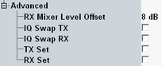

The "Advanced RF Settings" control expert RF settings.

Varies the input level of the mixer in the analyzer path.
Remote command:With active I/Q swap, the I values are mapped to the Q channel and vice versa. As a result, the points in the I/Q constellation diagram are reflected relative to the first bisector (Q = I). In spectral representation, the spectrum is reflected relative to the RF carrier frequency.
Remote command:Enable "TX Set" if you need to reduce the noise floor of the TX path. The amplifier in the frontend is then only activated for burst transmission. Between the bursts, the amplifier is switched off. Thus you get a much better signal-to-noise ratio.
Remote command:If "RX Set" is enabled, the signaling application disables the receiver while transmitting a signal to the DUT.
This setting is useful if the output power is much higher than the input power and the transmitted signal blocks the receiver, for example in an over-the-air setup. Note that a blocked receiver needs some time to regenerate after switching off the blocking signal.
Remote command: